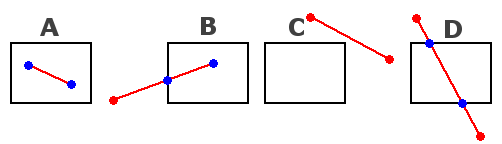
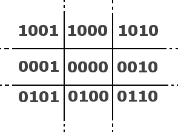

int findRegion(int x, int y)
{
int code=0;
if(y >= h)
code |= 1; //top
else if(y < 0)
code |= 2; //bottom
if(x >= w)
code |= 4; //right
else if (x < 0)
code |= 8; //left
return(code);
}
|
bool clipLine(int x1, int y1, int x2, int y2, int & x3, int & y3, int & x4, int & y4)
{
int code1, code2, codeout;
bool accept = 0, done=0;
code1 = findRegion(x1, y1); //the region outcodes for the endpoints
code2 = findRegion(x2, y2);
do //In theory, this can never end up in an infinite loop, it'll always come in one of the trivial cases eventually
{
if(!(code1 | code2)) accept = done = 1; //accept because both endpoints are in screen or on the border, trivial accept
else if(code1 & code2) done = 1; //the line isn't visible on screen, trivial reject
|
else //if no trivial reject or accept, continue the loop
{
int x, y;
codeout = code1 ? code1 : code2;
if(codeout & 1) //top
{
x = x1 + (x2 - x1) * (h - y1) / (y2 - y1);
y = h - 1;
}
else if(codeout & 2) //bottom
{
x = x1 + (x2 - x1) * -y1 / (y2 - y1);
y = 0;
}
else if(codeout & 4) //right
{
y = y1 + (y2 - y1) * (w - x1) / (x2 - x1);
x = w - 1;
}
else //left
{
y = y1 + (y2 - y1) * -x1 / (x2 - x1);
x = 0;
}
|
if(codeout == code1) //first endpoint was clipped
{
x1 = x; y1 = y;
code1 = findRegion(x1, y1);
}
else //second endpoint was clipped
{
x2 = x; y2 = y;
code2 = findRegion(x2, y2);
}
}
}
while(done == 0);
|
if(accept)
{
x3 = x1;
x4 = x2;
y3 = y1;
y4 = y2;
return 1;
}
else
{
x3 = x4 = y3 = y4 = 0;
return 0;
}
}
|